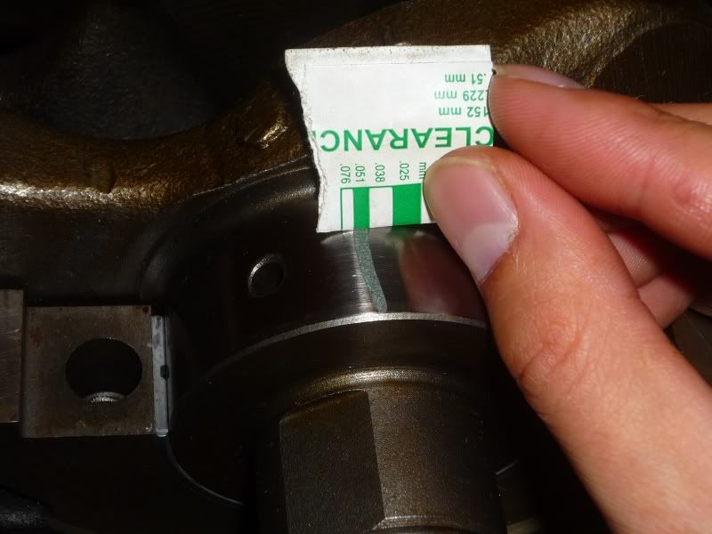
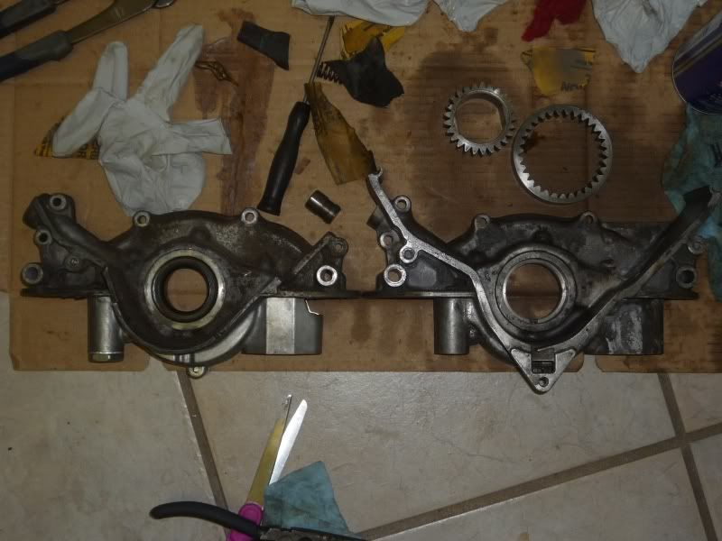

-
I have an equus electric oil pressure gauge with the stock dummy light hooked up to it.
Starting up, the oil light stays on and the gauge reads 0 or less than 10 psi. I rev the motor up to 3250 RPMs and I get 36 psi.
It's a VG33 block with a reman vg30 crank running a used turbo oil pump in my truck. Would this main bearing clearance be the main cause?

I failed to check the clearances of the oil pump before installing.
Shelly - 93 Pathfinder
VG33 conversion in progress
4x4 conversion complete
-
-
Was the remanufactured crank undersized? I'm not sure with your gauge setup, but my new stock sensor will show 0 "bars" with the red low oil pressure light at idle (700rpm), and 3 "bars" on the digital gauge at 800-900rpm on my fresh rebuild, so i ignore it.
If i recall, a VG30 should be around 7psi at idle. -
I get about 5-6 psi at hot idle and about 40-44psi at 3000rpm hot according my Prosport EVO digital gauge. When cold pressures can be as high 75psi at 3000rpm and 25psi at 1000rpm cold idle. I use 20w-50 in summer and 15w-40 in winter. All this is on a VG30ET A-series with 84T automatic oil pump. All new Nissan main and rod bearings when I built my engine. I run thicker oil due to forged Eagle rods and Wiseco pistons.
1986 300ZX Turbo…sold
1990 Skyline GT-R…new money pit
2014 Juke Nismo RS 6-speed…daily -
The Equus oil pressure gauge is a 90* sweep and the sender allows you to hook the stock dummy light sensor wire to it.
The crank was undersized but included the correct size bearings with it or so I thought. I should have went with larger bearings to get the clearance tighter.... I figured it would be okay when I rebuilt the motor 6 years ago.
I'll bump up the weight of oil and change out the filter. I'll hook up my other mechanical oil pressure gauge and see what I get. It's a pain to down there.
I have about 600 or so miles on the rebuild and I'm fearing the worst for a mistake I could have easily avoided.
Shelly - 93 Pathfinder
VG33 conversion in progress
4x4 conversion complete
-
Let me open my mouth and fan the flames.
According to an Innovate mtx-d pressure guage.
On a nice hot stock internal vg30et with easily 200k running 10/40:
at idle/700 rpm 20 psi
at 2700 rpm low 50's psi
According to the FSM for an 86 turbo I should be getting:
at idle 11psi (this is probably low enough to set your warning light off)
at 2k rpm you should be getting 43 psi
at 4k rpm you should be getting 57psi
These last two numbers bother me that you're note getting them.
Your shot of the crush gauge looks good to me. Getting out there a little bit but still within tolerances.
Now my turn to ask some questions.
Where do you have the sender for this gauge plugged in at??
If you used the stock hole in the block be aware that the oil goes from the pump through the filter to the sender.
So if your stock filter is plugged for some reason you're gonna read whatever pressure is over the amount to kick open the emergency bypass for the filter.
AKA change your filter ASAP and see if that helps.
EDIT
And while your in there make sure that little ball moves on pressure relief.Last edited by flatfoot; 02-23-2017, 07:24 PM.Life's short
Go fast
Have a blast
Leave a good looking corpse -
Well I changed the oil and filter today and am still getting the same thing. I'm using Castrol Gtx 10w40 and some kind of parts America oil filter that I got on clearance at Rock Auto. Before the change it was a Micro guard filter. The sender is in the stock location. I don't know anywhere else to attach it.
I took some videos with my phone of the gauge reading.
https://youtu.be/4jHg31tLgQ4
https://youtu.be/TUDHkk982Fo
I also noticed an audible clacking like knocking near the oil pump.
https://youtu.be/QGvcmsGEhP4
This whole investigation started when I was driving on the highway 65-70 mph I just heard loud valve tapping out of nowhere so I began to exit. I pulled over to stop, check for leaks and oil. Nothing. Start it back up and no more valve tapping.
I bought a jug of Rotella 15w40 to try and see if it will increase the pressure.
Really trying to avoid dropping the pan to check clearances but I might have to. Fortunately I have a lift in my truck so dropping the pan is a lot easier.Last edited by cuong nguyen; 02-23-2017, 10:46 PM.Shelly - 93 Pathfinder
VG33 conversion in progress
4x4 conversion complete
-
Well this is just my opinion if this was my build,new new!! Oil pump that's just a no brainer,but that's just me good luck. -
Bearing clearance is spot on. I'd look at your oil pump if its noisy, that's a dead give away somethings not right in there.
Also, as a rule of thumb I was taught 10psi oil pressure per 1000rpm for your average engine. Any less is no good.Straya, +61 -
Yeah, I totally agree with you. I did not know what I was thinking about using an old oil pump when I had rebuilt the engine.Originally posted by turbofedz View Post
I guess I'll order a new pump. Dreading tearing up up the front end and pulling the pan again.Shelly - 93 Pathfinder
VG33 conversion in progress
4x4 conversion complete
-
You can check the relief valve of the oil pump to make sure it isn't hung open from debris or sludge. It's the part of the oil pump with the very large bolt head. Take that off and inspect the spring and sealing ends of the valve. You can raise oil pressure by putting a washer or shim under the spring to raise opening pressure of the valve.
But since it's a used pump you could open up the backside of and inspecting the gears to see if they are excessively worn. I'd do that after replacing with a new one just to see what is really going on inside.
1986 300ZX Turbo…sold
1990 Skyline GT-R…new money pit
2014 Juke Nismo RS 6-speed…daily -
I ordered a new one with gaskets just in case.
Do you think it is possible to replace the main bearings and rod bearings with the crank still in the engine?
Shelly - 93 Pathfinder
VG33 conversion in progress
4x4 conversion complete
-
About 90% sure swapping the bearings without pulling the crank is a no go. Think about it.
You've got a clam shell bearing with a top half above the crank and the bottom below it.
Now being able to replace them with the engine block in the vehicle. I won't swear you cann't do it if you remove the cross member underneath the motor.
Not something I'd do, but you might be able to do it.Life's short
Go fast
Have a blast
Leave a good looking corpse -
Once I get under it I'll see what I'm working with again. In my head I'm thinking I could "spin" the bearing to get the old out and put in the new after I created more clearance. That part is the unknown. The girdle secures the mains while the oil pump and rear main seal seal the ends of the crank. If it's possible as such I wonder if I'll get an accurate measurement of clearance with the weight of the crank and such on the girdle.Shelly - 93 Pathfinder
VG33 conversion in progress
4x4 conversion complete
-
It is possible to replace main bearings in the vehicle, but a royal PITA.
I have had to redo several #1 main bearings on 09-13 Maxima under warranty due to worn upper half of bearing causing a faint knock. The tool that Nissan has you make is take a cotter pin and make it into a T and insert into the oil hole of the crank. Then you rotate the crank gently with the T-shaped cotter pin to push the upper bearing half out. And then use the same cotter pin to push the new bearing half in by turning crank the opposite way.
DO NOT DO THIS UNLESS YOU HAVE THE MECHANICAL SKILL TO DO THIS WITHOUT DAMAGING CRANK OR BEARINGS.
1986 300ZX Turbo…sold
1990 Skyline GT-R…new money pit
2014 Juke Nismo RS 6-speed…daily

Copyright © 2006–. All rights reserved. Privacy Policy